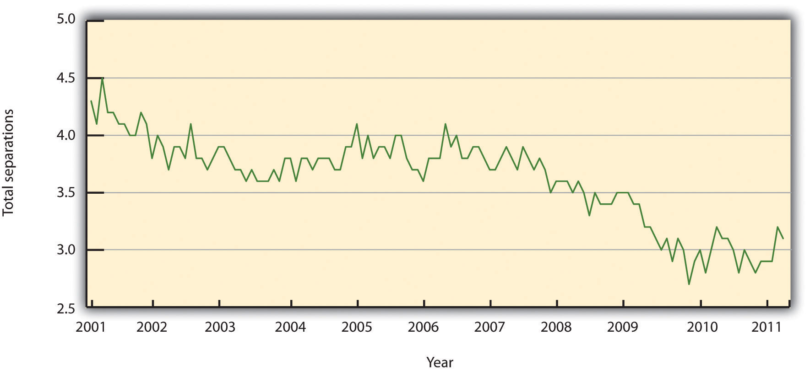
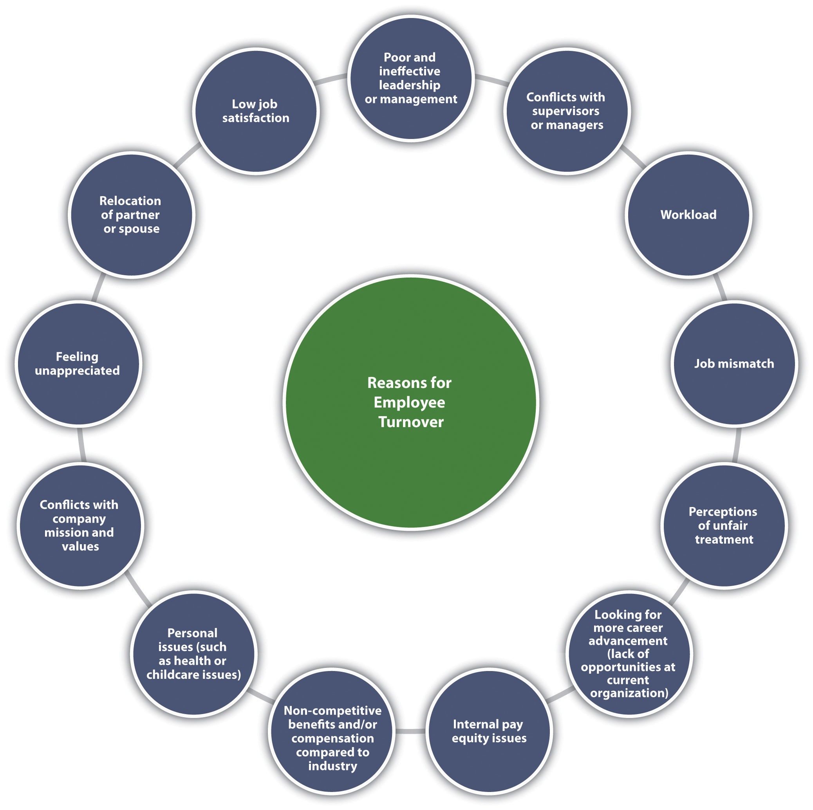
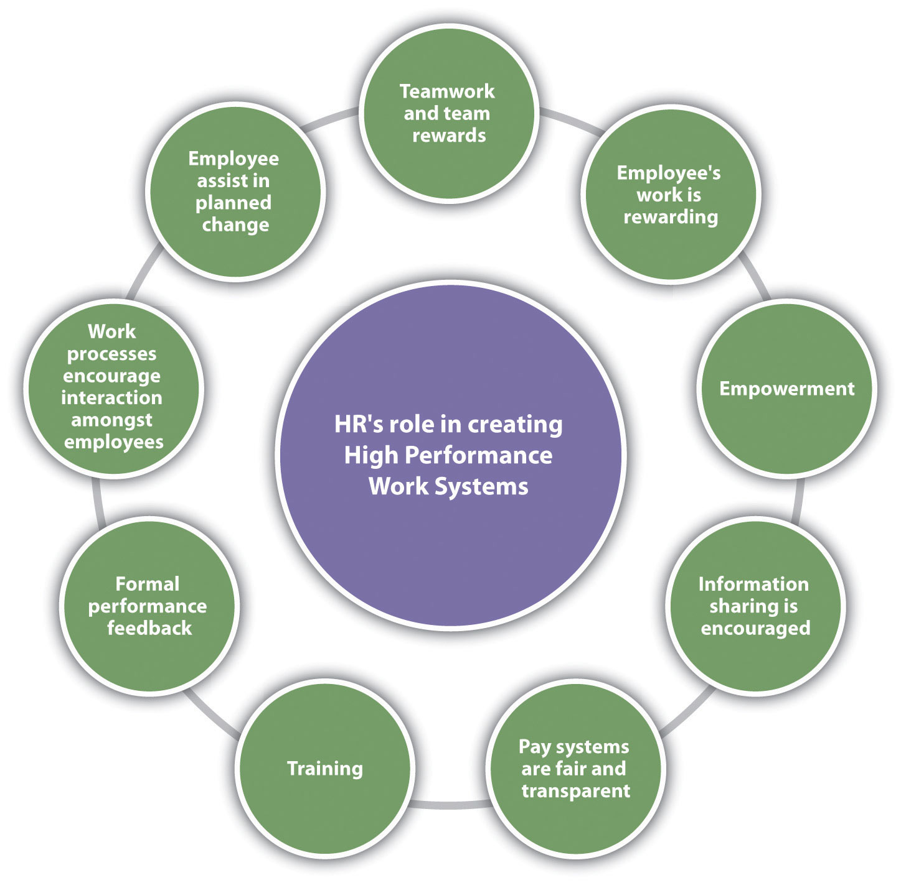
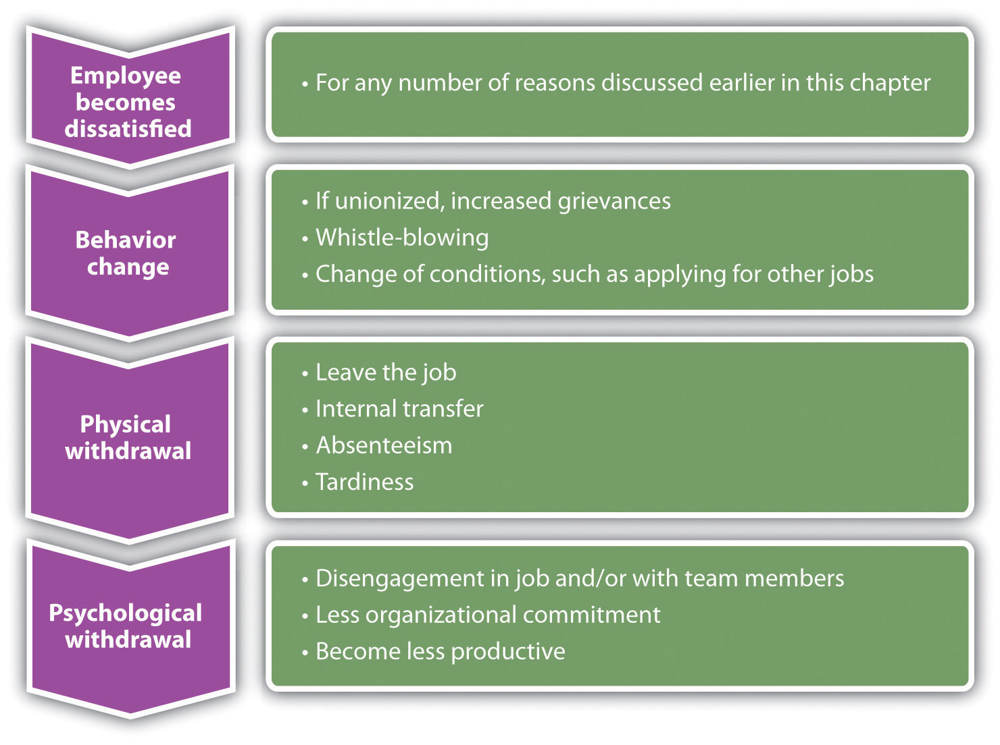
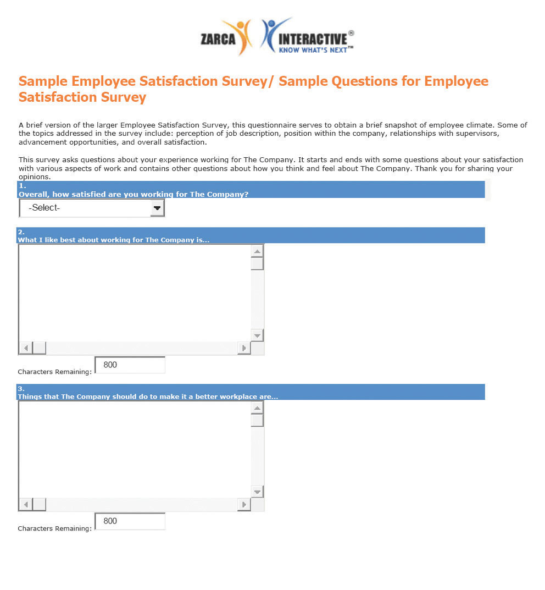

As an HR consultant, your job normally involves reviewing HR strategic plans and systems of small to medium size companies, then making recommendations on how to improve. Most of the companies you work with do not have large HR departments, and they find it less expensive to hire you than to hire a full-time person.
Your current client, Pacific Books, is a small online retailer with forty-seven employees. Pacific Books has had some challenges, and as the economy has improved, several employees have quit. They want you to look into this issue and provide a plan to improve retention.
Pacific Books currently has just one person managing payroll and benefits. The individual managers in the organization are the ones who handle other HR aspects, such as recruiting and developing compensation plans. As you speak with the managers and the payroll and benefits manager, it is clear employees are not happy working for this organization. You are concerned that if the company does not improve its employee retention, they will spend an excessive amount of time trying to recruit and train new people, so retention of the current employees is important.
As with most HR issues, rather than just guessing what employees want, you develop a survey to send to all employees, including management. You developed the survey on SurveyMonkey and asked employee satisfaction questions surrounding pay and benefits. However, you know that there are many other things that can cause someone to be unhappy at work, so to take this survey a step further, you decide to ask questions about the type of work employees are doing, management style, and work-life balance. Then you send out a link to all employees, giving them one week to take the survey.
When the results come in, they are astounding. Out of the forty-seven employees, forty-three selected “dissatisfied” on at least four or more areas of the five-question survey. While some employees are not happy with pay and benefits, the results say that other areas of the organization are actually what are causing the dissatisfaction. Employees are feeling micromanaged and do not have freedom over their time. There are also questions of favoritism by some managers for some employees, who always seem to get the “best” projects. When you sit down with the CEO to discuss the survey results, at first she defends the organization by saying the company offers the highest salaries and best benefits in the industry, and she doesn’t understand how someone can be dissatisfied. You explain to her that employee retention and motivation is partly about pay and benefits, but it includes other aspects of the employee’s job, too. She listens intently and then asks you to develop a retention and motivation plan that can improve the organization.
The author introduces the chapter on retention and motivation strategies.
According to the book Keeping the People Who Keep You in Business by Leigh Branham,Leigh Branham, Keeping the People Who Keep You in Business (New York: American Management Association, 2000), 6. the cost of losing an employee can range from 25 percent to 200 percent of that employee’s salary. Some of the costs cited revolve around customer service disruption and loss of morale among other employees, burnout of other employees, and the costs of hiring someone new. Losing an employee is called turnoverReplacement of employees who are fired or quit. The term is normally expressed as a percentage: the ratio of the number of workers who had to be replaced in a given period to the average number of workers at the organization..
There are two types of turnover, voluntary turnover and involuntary turnover. Voluntary turnoverThe type of turnover that is initiated by the employee for many different reasons. is the type of turnover that is initiated by the employee for many different reasons. Voluntary turnover can be somewhat predicted and addressed in HR, the focus of this chapter. Involuntary turnoverTurnover in which the employee has no choice in his or her termination—for example, employer-initiated due to nonperformance. is where the employee has no choice in their termination—for example, employer-initiated due to nonperformance. This is discussed further in Chapter 9 "Successful Employee Communication".
It has been suggested that replacement of an employee who is paid $8 per hour can range upwards of $4,000.Noel Paiement “It Will Cost You $4,000 to Replace Just One $8 per Hour Employee,” Charity Village, July 13, 2009, accessed August 30, 2011, http://www.charityvillage.com/cv/research/rhr50.html. Turnover can be calculated by
separations during the time period (month)/total number of employees midmonth × 100 = the percentage of turnover.
For example, let’s assume there were three separations during the month of August and 115 employees midmonth. We can calculate turnover in this scenario by
3/115 × 100 = 2.6% turnover rate.
This gives us the overall turnover rate for our organization. We may want to calculate turnover rates based on region or department to gather more specific data. For example, let’s say of the three separations, two were in the accounting department. We have ten people in the accounting department. We can calculate that by
accounting: 2/10 × 100 = 20% turnover rate.The turnover rate in accounting is alarmingly high compared to our company turnover rate. There may be something happening in this department to cause unusual turnover. Some of the possible reasons are discussed in Section 7.1.1 "Reasons for Voluntary Turnover".
Figure 7.1 United States Yearly Turnover Statistics, 2001–11
Source: Data from Bureau of Labor Statistics, “Job Openings and Labor Turnover Survey,” accessed August 11, 2011, http://www.bls.gov/jlt/#data.
In HR, we can separate the costs associated with turnover into indirect costs and direct costs. Direct turnover costsIncludes the cost of leaving, replacement costs, and transition costs. include the cost of leaving, replacement costs, and transition costs, while indirect turnover costsIncludes the loss of production and reduced performance. include the loss of production and reduced performance. The following are some examples of turnover costs:Carl. P. Maertz, Jr. and M. A. Campion, “25 Years of Voluntary Turnover Research: A Review and Critique,” in International Review of Industrial and Organizational Psychology, vol. 13, ed. Cary L. Cooper and Ivan T. Robertson (London: John Wiley, 1998), 49–86.
To avoid these costs, development of retention plans is an important function of the HR strategic plan. Retention plansA plan that outlines the strategies the organization will use to reduce turnover and address employee motivation. outline the strategies the organization will use to reduce turnover and address employee motivation.
Table 7.1 Turnover Costs
| Direct | Indirect |
|---|---|
| Recruitment costs | Lost knowledge |
| Advertising costs for new position | Loss of productivity while new employee is brought up to speed |
| Orientation and training of new employee | Cost associated with lack of motivation prior to leaving |
| Severance costs | Cost associated with loss of trade secrets |
| Testing costs | |
| Time to interview new replacements | |
| Time to recruit and train new hires |
This video provides an excellent illustration of how to measure the cost of employee turnover in the hospitality industry.
Before we discuss specific details on retention planning, it is important to address the reasons why people choose to leave an organization to begin with. One mistake HR professionals and managers make is to assume people leave solely on the basis of their unhappiness with their compensation packages. Many factors can cause demotivated employees, which we discuss in Section 7.2.1 "Theories on Job Dissatisfaction".
Once we find out what can cause voluntary turnover, we can develop retention strategies to reduce turnover. Some of the common reasons employees leave organizations can include the following:
We know that some people will move or perhaps their family situation changes. This type of turnover is normal and expected. Figure 7.2 "Common Reasons for Employee Turnover" shows other examples of why people leave organizations.
Figure 7.2 Common Reasons for Employee Turnover
As HR professionals and managers, we want to be sure we have plans in place to keep our best people. One such plan is the retention plan, which we will discuss in Section 7.2 "Retention Plans".
Do you feel your current or past organization did a good job of reducing turnover? Why or why not?
Effective high-performance work systems (HPWS)A set of systematic HR practices that create an environment where the employee has greater involvement and responsibility for the success of the organization. is the name given to a set of systematic HR practices that create an environment where the employee has greater involvement and responsibility for the success of the organization. A high-performance work system is a strategic approach to many of the things we do in HR, including retention. Generally speaking, a HPWS gets employees involved in conceiving, designing, and implementing processes that are better for the company and better for the employee, which increases retention. Figure 7.4 "HR Components of a HPWS" gives an example of HR’s part in creating these systems.
Figure 7.4 HR Components of a HPWS
Keeping HPWS in mind, we can begin to develop retention plans. The first step in this process is to understand some of the theories on job satisfaction and dissatisfaction. Next, we can gather data as to the satisfaction level of our current employees. Then we can begin to implement specific strategies for employee retention.
There are a number of theories that attempt to describe what makes a satisfied employee versus an unsatisfied employee. While you may have learned about these theories in another class, such as organizational behavior, they are worth a review here to help us better understand employee satisfaction from an HR perspective.
The first step to developing a retention plan is understanding some of the theories surrounding job satisfaction. One of the basic theories is the progression of job withdrawal theory, developed by Dan Farrell and James Petersen.Dan Farrell and James C. Petersen, “Commitment, Absenteeism and Turnover of New Employees: A Longitudinal Study,” Human Relations 37, no. 8 (August 1984): 681–692, accessed August 26, 2011, http://libres.uncg.edu/ir/uncg/f/J_Petersen_Commitment_1984.pdf. It says that people develop a set of behaviors in succession to avoid their work situation. These behaviors include behavior change, physical withdrawal, and psychological withdrawal.
Within the behavior change area, an employee will first try to change the situation that is causing the dissatisfaction. For example, if the employee is unhappy with the management style, he or she might consider asking for a department move. In the physical withdrawal phase, the employee does one of the following:
If an employee is unable to leave the job situation, he or she will experience psychological withdrawal. They will become disengaged and may show less job involvement and commitment to the organization, which can create large costs to the organization, such as dissatisfied customers.
Figure 7.5 Process of Job Withdrawal
Between 1927 and 1932, a series of experiments were conducted by Elton Mayo in the Western Electric Hawthorne Works company in Illinois.Elton Mayo, The Social Problems of an Industrial Civilization (1949; repr., New York: Arno Press, 2007). Mayo developed these experiments to see how the physical and environmental factors of the workplace, such as lighting and break times, would affect employee motivation.
This was some of the first research performed that looked at human motivation at work. His results were surprising, as he found that no matter which experiments were performed, worker output improved. His conclusion and explanation for this was the simple fact the workers were happy to receive attention from researchers who expressed interest in them. As a result, these experiments, scheduled to last one year, extended to five years to increase the knowledge base about human motivation.
The implication of this research applies to HR and managers even today. It tells us that our retention plans must include training and other activities that make the employee feel valued.
In 1943, Abraham Maslow developed what was known as the theory of human motivation.Abraham Maslow, Toward a Psychology of Being, 3rd ed. (New York: Wiley, 1999). His theory was developed in an attempt to explain human motivation. According to Maslow, there is a hierarchy of five needs, and as one level of need is satisfied, it will no longer be a motivator. In other words, people start at the bottom of the hierarchy and work their way up. Maslow’s hierarchy consists of the following:
Physiological needs are our most basic needs, including food, water, and shelter. Safety needs at work might include feeling safe in the actual physical environment, or job security. As humans, we have the basic need to spend time with others. Esteem needs refer to the need we have to feel good about ourselves. Finally, self-actualization needs are the needs we have to better ourselves.
The implications of his research tell us, for example, that as long as an employee’s physiological needs are met, increased pay may not be a motivator. Likewise, employees should be motivated at work by having all needs met. Needs might include, for example, fair pay, safety standards at work, opportunities to socialize, compliments to help raise our esteem, and training opportunities to further develop ourselves.
In 1959, Frederick Herzberg published The Motivation to Work,Frederick Herzberg, Bernard Mausner, and Barbara Bloch Snyderman, The Motivation to Work (New Brunswick, NJ: Transaction Publishers, 1993). which described his studies to determine which aspects in a work environment caused satisfaction or dissatisfaction. He performed interviews in which employees were asked what pleased and displeased them about their work. From his research, he developed the motivation-hygiene theory to explain these results.
The things that satisfied the employees were motivators, while the dissatisfiers were the hygiene factors. He further said the hygiene factors were not necessarily motivators, but if not present in the work environment, they would actually cause demotivation. In other words, the hygiene factors are expected and assumed, while they may not necessarily motivate.
His research showed the following as the top six motivation factorsPart of a theory developed by Herzberg that says some things will motivate an employee, such as being given responsibility.:
The following were the top six hygiene factorsPart of a theory developed by Herzberg that says some things will not necessarily motivate employees but will cause dissatisfaction if not present.:
The implication of this research is clear. Salary, for example, is on the hygiene factor list. Fair pay is expected, but it doesn’t actually motivate someone to do a better job. On the other hand, programs to further develop employees, such as management training programs, would be considered a motivator. Therefore, our retention plans should be focused on the area of fair salary of course, but if they take the direction of Herzberg’s motivational factors, the actual motivators tend to be the work and recognition surrounding the work performed.
Douglas McGregor proposed the X-Y theory in his 1960 book called The Human Side of Enterprise.Douglas McGregor, The Human Side of Enterprise (1960; repr., New York: McGraw-Hill, 2006). McGregor’s theory gives us a starting point to understanding how management style can impact the retention of employees. His theory suggests two fundamental approaches to managing people. Theory X managersAccording to McGregor, a type of manager who has a negative approach to employee motivation., who have an authoritarian management style, have the following fundamental management beliefs:
Theory Y managersAccording to McGregor, a type of manager who has a positive approach to employee motivation., on the other hand, have the following beliefs:
As you can see, these two belief systems have a large variance, and managers who manage under the X theory may have a more difficult time retaining workers and may see higher turnover rates. As a result, it is our job in HR to provide training opportunities in the area of management, so our managers can help motivate the employees. Training is a large part of the retention plan. This will be addressed in more detail in Section 7.3 "Implementing Retention Strategies".
What are the disadvantages of taking a theory X approach with your employees?
It is unknown for sure where this term was first used, although some believe it was coined in the 1700s during the Seven Years’ War. In business today, the stick approach refers to “poking and prodding” to get employees to do something. The carrot approach refers to the offering of some reward or incentive to motivate employees. Many companies use the stick approach, as in the following examples:
As you can see, the stick approach takes a punitive look at retention, and we know this may motivate for a short period of time, but not in the long term.
The carrot approach might include the following:
The carrot approach takes a much more positive approach to employee motivation but still may not be effective. For example, this approach can actually demotivate employees if they do not feel the goal is achievable. Also, if organizations use this as the only motivational technique, ignoring physiological rewards such as career growth, this could be a detriment as well. This approach is used as a retention method, usually as part of a compensation plan.
All the employee satisfaction theories we have discussed have implications for the development of our retention plans and reduction of turnover. These theories can be intertwined into the specific retention strategies we will implement. This is discussed in Section 7.3.1 "Salaries and Benefits".
After we have an understanding of why employees leave and employee satisfaction theories, research is our next step in developing a retention plan that will work for your organization. There isn’t a “one size fits all” approach to retention planning, so the research component is essential to formulate a plan that will make a difference in turnover rates.
Research can be performed in two ways. First, exit interviews of employees who are leaving the organization can provide important retention information. An exit interviewAn interview performed by HR or a manager that seeks information as to what the employee liked at the organization and what they see should be improved. is an interview performed by HR or a manager that seeks information as to what the employee liked at the organization and what they see should be improved. Exit interviews can be a valuable way to gather information about employee satisfaction and can serve as a starting point for determining any retention issues that may exist in the organization. However, the exit survey data should be reviewed over longer periods of time with several employees, so we can be sure we are not making retention plans based on the feedback of only a few people.
The second way to perform research is through employee satisfaction surveys. A standardized and widely used measure of job satisfaction is the job descriptive index (JDI)A standardized and widely used measure of job satisfaction, measuring five facets of job satisfaction. survey. While JDI was initially developed in 1969 at Bowling Green State University, it has gone through extensive revisions, the most recent one in 2009. JDI looks at five aspects of job satisfaction, including present job, present pay, opportunities for promotion, supervision, and coworkers.“Job Descriptive Index,” JDI Research Group, Bowling Green State University, accessed July 29, 2011, http://www.bgsu.edu/departments/psych/io/jdi/page54706.html. Each of the five facets contains nine or eighteen questions; the survey can be given in whole or measure only one facet. The value of the scale is that an HR manager can measure job satisfaction over a period of time and compare current results to past results and even compare job satisfaction at their company versus their industry. This allows the HR manager to consider changes in the organization, such as a change in compensation structure, and see how job satisfaction is impacted by the change.
Any type of survey can provide information on the employee’s satisfaction with their manager, workload, and other satisfaction and motivational issues. An example of a general employee satisfaction survey is shown in Figure 7.7 "A Sample Employee Satisfaction Survey". However, a few things should be considered when developing an employee satisfaction survey:
Once data have been gathered and analyzed, we can formulate our retention plans. Our plan should always be tied to the strategic goals of the organization and the HPWS previously developed, and awareness of motivational theories should be coupled with the plans. Here are the components of a retention plan:
In Section 7.3 "Implementing Retention Strategies", we will discuss the implementation of specific retention strategies.
Figure 7.7 A Sample Employee Satisfaction Survey
Source: “Sample Employee Satisfaction Surveys,” Zarca Interactive, accessed August 18, 2011, http://www.zarca.com/Online-Surveys-Employee/sample-employee-surveys.html.
How can you apply each of these motivation techniques to motivation theories?
As we have addressed so far in this chapter, retention and reduction of turnover is paramount to a healthy organization. Performing research, such as calculating turnover rates, doing exit interviews, and surveying employees’ satisfaction, are the first steps. Once this is done, understanding motivational theories and the application of them in the retention plan can help reduce turnover. Next, we can apply specific retention strategies to include in our plans, while keeping our budget in mind. Some of the retention strategies discussed have already or will be discussed in their own chapters, but they are certainly worth a mention here as part of the overall plan.
As we know from Chapter 6 "Compensation and Benefits", a comprehensive compensation plan that includes not only pay but things such as health benefits and paid time off (PTO) is the first retention strategy that should be addressed. The compensation plan should not only help in recruitment of the right people but also help retain employees. Utilizing a pay banding system, in which the levels of compensation for jobs are clearly defined, is one way to ensure fairness exists within internal pay structures.
As we know from this chapter, compensation is not everything. An employee can be well paid and have great benefits but still not be satisfied with the organization. Some of the considerations surrounding pay as a way to retain employees include the following:
Please refer to Chapter 6 "Compensation and Benefits" for more information on pay and benefits, and analyze how your compensation plans could be negatively affecting your retention.
To meet our higher level needs, humans need to experience self-growth. HR professionals and managers can help this process by offering training programs within the organization and paying for employees to attend career skill seminars and programs. In addition, many companies offer tuition reimbursement programs to help the employee earn a degree. Dick’s Drive-In, a local fast food restaurant in Seattle, Washington, offers $18,000 in scholarships over four years to employees working twenty hours per week. There is a six-month waiting period, and the employee must continue to work twenty hours per week. In a high turnover industry, Dick’s Drive-In boasts one of the highest retention rates around.
You work for a small organization in the HR department. One of your web developers schedules a meeting with you, and during the meeting she says that she doesn’t see any career growth for her in the organization. As a result, she confides that she is planning to leave the organization as soon as she can find another job. She is one of the best developers you have and you would hate to lose her.
How Would You Handle This?
https://api.wistia.com/v1/medias/1348713/embedThe author discusses the How Would You Handle This situation in this chapter at: https://api.wistia.com/v1/medias/1348713/embed.
Chapter 11 "Employee Assessment", addresses performance appraisals. The performance appraisalA method by which job performance is measured. is a formalized process to assess how well an employee does his or her job. The effectiveness of this process can contribute to employee retention, in that employees can gain constructive feedback on their job performance, and it can be an opportunity for the manager to work with the employee to set goals within the organization. This process can help ensure the employee’s upper level self-actualization needs are met, but it also can address some of the motivational factors discussed by Herzberg, such as achievement, recognition, and responsibility.
How important is PTO to you? How do you think the amount of PTO would affect your likelihood to accept one job over another?
Succession planningA process for identifying and developing internal people who have the potential to fill positions. is a process of identifying and developing internal people who have the potential for filling positions. As we know, many people leave organizations because they do not see career growth or potential. One way we can combat this in our retention plan is to make sure we have a clear succession planning process that is communicated to employees. Succession planning is sometimes called the talent bench, because successful companies always have talented people “on the bench” or ready to do the job should a key position become vacant. The goals of most succession plans include the following:William J. Rothwell and H. C. Kazanas, Building In-House Leadership and Management Development Programs: Their Creation, Management, and Continuous Improvement (Westport, CT: Quorum Books, 1999), 131.
Succession planning must be just that: planned. This allows clear communication to the employees on how they can further develop within the organization, and it helps them see what skills they should master before that time comes. Chapter 8 "Training and Development" will provide more information on how to develop and implement a succession plan.
This video addresses some “real world” retention strategies used at Michels Corporation, a utility contractor services company.
According to a Salary.com survey, the ability to work from home and flexible work schedules are benefits that would entice an employee to stay in their job.“Employee Job Satisfaction and Retention Survey, 2007/2008,” Salary.com, 2008, accessed February 26, 2011, http://www.salary.com/docs/resources/JobSatSurvey_08.pdf. The ability to implement this type of retention strategy might be difficult, depending on the type of business. For example, a retailer may not be able to implement this, since the sales associate must be in the store to assist customers. However, for many professions, it is a viable option, worth including in the retention plan and part of work-life balance, which we will discuss in Section 7.3.10 "Work-Life Balance".
Some companies, such as Recreational Equipment Incorporated, based in Seattle, offer twelve weeks of unpaid leave per year (beyond the twelve weeks required under the Family and Medical Leave Act) for the employee to pursue volunteering or traveling opportunities. In addition, with fifteen years of service with the company, paid sabbaticals are offered, which include four weeks plus already earned vacation time.
As we discuss in Section 7.1.1 "Reasons for Voluntary Turnover", a manager can affect an employee’s willingness to stay on the job. In a recent Gallup poll of one million workers, a poor supervisor or manager is the number one reason why people leave their jobs.“No. 1 Reason People Quit Their jobs,” AOL News, Netscape, n.d., accessed July 28, 2011, http://webcenters.netscape.compuserve.com/whatsnew/package.jsp?name=fte/quitjobs/quitjobs&floc=wn-dx. Managers who bully, use the theory X approach, communicate poorly, or are incompetent may find it difficult to motivate employees to stay within the organization. While in HR we cannot control a manager’s behavior, we can provide training to create better management. Training of managers to be better communicators and motivators is a way to handle this retention issue. We will discuss training further in Chapter 8 "Training and Development".
Perceptions on fairness and how organizations handle conflict can be a contributing factor to retention. Outcome fairnessThe judgment that people make with respect to the outcomes they receive versus the outcomes received by others with whom they associate. refers to the judgment that people make with respect to the outcomes they receive versus the outcomes received by others with whom they associate with. When people are deciding if something is fair, they will likely look at procedural justiceThe process used to determine the outcomes received., or the process used to determine the outcomes received. There are six main areas employees will use to determine the outcome fairness of a conflict:
For example, let’s suppose JoAnn just received a bonus and recognition at the company party for her contributions to an important company project. Another employee, Sam, might compare his inputs and outputs and determine it was unfair that JoAnn was recognized because he had worked on bigger projects and not received the same recognition or bonus. When we look at how our retention strategies are developed, we want to be sure they can apply to everyone in the organization; otherwise it may cause retention problems. Some of the procedures questioned could include the following:
While some of these policies may seem minor, they can make a big difference in retention. Besides development of fair policies, we should be sure that the policies are clearly communicated and any processes are communicated as well. These types of policies should be revisited yearly and addressed in the retention plan if it appears they are causing employee dissatisfaction.
In addition to a sense of fairness within the organization, there should be a specific way (process) of managing conflict. If the organization is unionized, it is likely a grievance process is already in place to handle many types of conflicts. We will discuss this process in greater detail in Chapter 12 "Working with Labor Unions". There are four basic steps to handle conflict. First, the individuals in conflict should try to handle the conflict by discussing the problem with one another. If this doesn’t work, a panel of representatives from the organization should hear both sides of the dispute and make a recommendation. If this doesn’t work, the organization may want to consider mediation and, in extreme cases, arbitration. In mediationWhen a neutral third party from outside the organization hears both sides of a dispute and tries to get the parties to come to a resolution., a neutral third party from outside the organization hears both sides of a dispute and tries to get the parties to come to a resolution, while in arbitrationWhen an outside person hears both sides of a conflict and makes a specific decision about how things should proceed., an outside person hears both sides and makes a specific decision about how things should proceed.
With over nineteen thousand employees in sixty countries, Google has seen its share of retention problems.“Our Philosophy,” Google, n.d., accessed July 28, 2011, http://www.google.com/about/corporate/company/tenthings.html. In late 2010, Googlers left the organization en masse to work for Facebook or Twitter.Ben Popper, “Why Google’s Retention Plan Backfired,” CBS Business Network, September 16, 2010, accessed July 28, 2011, http://www.bnet.com/blog/high-tech/why-googles-retention-plan-backfired/1172. Many who left were looking for pre–initial public offering (IPO) organizations to work with, something that Google couldn’t compete with, since it went IPO in April 2004. As a result of the high turnover, Google put its mathematical algorithms to work to determine which employees were most likely to leave, allowing HR to determine what departments to focus on in their retention plans. In 2011, Google gave every employee a 10 percent pay raise, and it continues to offer a variety of new and old perks, such as free food in any of its cafeterias, 20 percent of time to work on personal projects, and $175 peer spot bonuses. Google also offers free laundry services, climbing walls, tuition reimbursement, child-care centers, financial planning classes, and matching funds (up to $3,000 per employee) to nonprofit organizations. For all this, Google ranked number four on Fortune magazine’s list of 100 best companies to work for in 2011.“100 Best Companies to Work For,” CNN Money, 2011, accessed July 28, 2011, http://money.cnn.com/magazines/fortune/bestcompanies/2011/snapshots/4.html. Some say it isn’t the perks, high pay, or bonuses but the company culture that Google creates. A weekly all-hands meeting with the founders, where people are encouraged to ask the founders questions, and a team focus meeting where everyone shares ideas are examples of the company culture Google creates. Google exemplifies the importance of culture in retention of employees.
As we have discussed previously, one of the reasons for job dissatisfaction is the job itself. Ensuring we are appropriately matching skills with the job when we do our initial hiring is important. Revisiting the recruitment plan and selection process should be a consideration.
Job enrichmentAdding more meaningful tasks to enhance a job and make the employee’s work more rewarding. means to enhance a job by adding more meaningful tasks to make the employee’s work more rewarding. For example, if a retail salesperson is good at creating eye-catching displays, allow him or her to practice this skill and assign tasks revolving around this. Job enrichment can fulfill the higher level of human needs while creating job satisfaction at the same time. In fact, research in this area by Richard Hackman and Greg OldhamRobert N. Ford, Motivation through the Work Itself (New York: American Management Association, 1969); William J. Paul, Keith B. Robertson, and Frederick Herzberg, “Job Enrichment Pays Off,” Harvard Business Review, March–April 1969, 61–78. found that employees need the following to achieve job satisfaction:
In addition, job enlargementAdding new challenges or responsibilities to a current job., defined as the adding of new challenges or responsibilities to a current job, can create job satisfaction. Assigning employees to a special project or task is an example of job enlargement. Be cautioned, though, that some employees may resent additional work, and job enlargement could actually be a demotivator. Otherwise, knowing the employee and his or her goals and adding work that can be an end to these goals is the best way to achieve retention through job enlargement.
Employee empowermentA way to involve employees in their work by allowing them to make decisions and act upon those decisions, with the support of the organization. involves employees in their work by allowing them to make decisions and act upon those decisions, with the support of the organization. Employees who are not micromanaged and who have the power to determine the sequence of their own work day, for example, tend to be more satisfied than those who are not empowered. Empowerment can include the following:
In Chapter 6 "Compensation and Benefits", we discussed several pay-for-performance strategies we can implement to motivate our employees. A pay-for-performance strategy means that employees are rewarded for meeting preset objectives within the organization. For example, in a merit-based pay system, the employee is rewarded for meeting or exceeding performance during a given time period. Rather than a set pay increase every year, the increase is based on performance. Some organizations offer bonuses to employees for meeting objectives, while some organizations offer team incentive pay if a team achieves a specific, predetermined outcome. For example, each player on the winning team of the 2010 NFL Super Bowl earned a team bonus of $83,000,Darren Rovell, “How Much Do Players Get Paid for Winning the Super Bowl?” CNBC Sports, January 18, 2011, accessed July 29, 2011, http://www.cnbc.com/id/41138354/How_Much_Do_Players_Get_Paid_For_Winning_the_Super_Bowl. while the losing team of the Super Bowl took home $42,000. Players also earn money for each wild card game and payoff game. Some organizations also offer profit sharing, which is tied to a company’s overall performance. Gain sharing, different from profit sharing, focuses on improvement of productivity within the organization. For example, the city of Loveland in Colorado implemented a gain-sharing program that defined three criteria that needed to be met for employees to be given extra compensation. The city revenues had to exceed expenses, expenses had to be equal to or less than the previous year’s expenses, and a citizen satisfaction survey had to meet minimum requirements.
To make sure a pay-for-performance system works, the organization needs to ensure the following:
As we have already addressed, pay isn’t everything, but it certainly can be an important part of the employee retention plan and strategy.
This video shows an example of a new pay-for-performance plan for teachers in South Carolina.
Work-life balance discussions originated during the 1960s and 1970s and pertained mostly to working mothers’ meeting the demands of family and work. During the 1980s, the realization that meeting a work-life balance is important (for all, not just working mothers) resulted in companies such as IBM implementing flextime and home-based work solutions. The growing awareness of the work-life balance problem continued into the 1990s, when policies were developed and implemented but not acted upon by managers and employees, according to Jim Bird in Employment Relations Today.Jim Bird, “Work-Life Balance: Doing It Right and Avoiding the Pitfalls,” Employment Relations Today 33, no. 3 (2006), reprinted on WorkLifeBalance.com, accessed July 29, 2011, http://www.worklifebalance.com/assets/pdfs/article3.pdf. Today, work-life balance is considered an important topic, so much so that the World at Work Society offers special certifications in this area. The World at Work certification programs focus on creation of successful programs to attract, retain, and motivate employees.
Karol Rose, author of Work Life Effectiveness,Karol Rose, Work-life Effectiveness: Bottom-line Strategies for Today’s Workplace (Scottsdale, AZ: World at Work Press, 2006). says that most companies look at a systems approach of work-life balance, instead of a systems and individual approach. The systems approach to work-life balance includes policies and procedures that allow people flexibility, such as telecommuting and flextime options.
According to Rose, looking at the individual differences is equally as important as the systems approach. Brad Harrington, the director of Boston College’s Center for Work and Family, stresses this issue: “Work-life balance comes down, not to an organizational strategy, but to an individual strategy.” For example, a single parent has a different work-life balance need than someone without children. In other words, as HR professionals, we can create work-life balance systems, but we should also look at individual approaches. For example, at Recreational Equipment Incorporated (REI),“Pay and Benefits: Total Rewards at REI,” Recreational Equipment Incorporated, n.d., accessed July 29, 2011, http://www.rei.com/jobs/pay.html. they use the systems approach perspective and offer paid time off and sabbaticals, but their employee assistance program also offers access to services, referrals, and free consulting for the individual to find his or her perfect work-life balance. For this, REI receives a number nine ranking on Fortune’s list of best companies to work for in the area of work-life balance.
The company culture can contribute greatly to work-life balance. Some organizations have a culture of flexibility that fares well for workers who do not want to feel tethered to an office, while some workers prefer to be in the office where more informal socializing can occur. While some companies promote work-life balance on paper, upper management needs to let employees know it is OK to take advantage of the alternatives to create a positive work-life balance. For example, companies place different levels of value on work-life options such as telecommuting. An organization may have a telecommuting option, but the employees must feel it is OK to use these options. Even in a company that has work-life balance systems, a manager who sends e-mails at 10 p.m. on Saturday night could be sending the wrong message to employees about the expectations, creating an environment in which work-life balance is not practiced in reality. O’Neill, a surf gear company in California, sends a strong message to its employees by offering half-day Fridays during the summer,“Vans, Quiksilver, and California Top Skate Companies Offer Dream Careers to FIDM’s Graphic Design School Grads,” Fashion News, June 4, 2011, accessed July 29, 2011, http://www.fashionnews.com/2011/06/04/vans-quiksilver-californias-top-skate-companies-offer-dream-careers-to-fidms-graphic -design-school-grads. so employees can get a head start on the weekend.
Jim Bird, in his work-life balance article in Employment Relations Today, suggests implementing a work-life balance training program that is dual purpose (can serve both personal interests and professional development). In other words, implement trainings in which the employee can develop both personal skills and interests that can translate into higher productivity at work.
Besides the training program, Bird suggests creating a monthly work-life newsletter as an educational tool to show the company’s commitment to work-life balance. The newsletter can include interviews from respected employees and tips on how to create a work-life balance.
Finally, training managers on the importance of work-life balance and how to create a culture that embraces this is a key way to use work-life balance as a retention strategy.
According to Fortune’s “100 Best Companies to Work For,”“100 Best Companies to Work For,” CNN Money, 2011, accessed February 26, 2011, http://money.cnn.com/galleries/2011/news/companies/1101/gallery.bestcompanies_unusual_perks.fortune/5.html. retention strategies that are more unusual might be part of your retention plan. Some strategies from the list might include the following:
While some of these options may not work in your organization, we must remember to be creative when our goal is to retain our best employees and reduce turnover in our organizations. The bottom line is to create a plan and make sure the plan is communicated to all employees.
Chapter Summary
The author provides a video summary of the chapter.
Turnover Analysis
You recently completed your company’s new compensation plan. You are happy with the results but know there is more to retaining the employees than just pay, and you don’t currently have a retention plan. Your organization is a large staffing firm, consisting of several offices on the West Coast. The majority of employees are staffing recruiters, and they fill full-time and temporary positions for a variety of clients. One of the challenges you face is a difference in geographical areas, and as a result, there are differences in what may motivate employees.
As you initially look at turnover numbers, you have the sense that turnover has increased over the last six months. Your initial thoughts are the need for a better retention strategy, utilizing a bonus structure as well as other methods of retention. Currently, your organization pays a straight salary to employees, does not offer flextime or telecommuting options, focuses on individual performance (number of staffing placements) rather than team performance, and provides five days of vacation for every two years with the organization.
| Month | Separated Employees | Total Number of Employees Midmonth |
|---|---|---|
| March | 12 | 552 |
| April | 14 | 541 |
| May | 16 | 539 |
| June | 20 | 548 |
| July | 22 | 545 |
Following is a list of some possible retention strategies. Rank each one in order of importance to you as an employee (1 being the most important), then share your rankings with classmates: